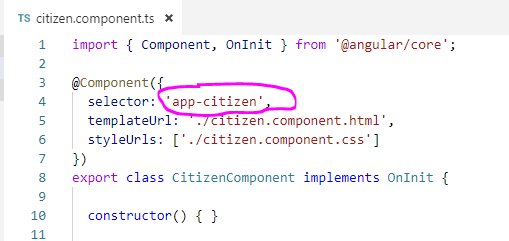
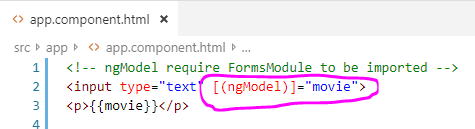
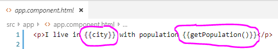
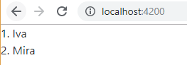
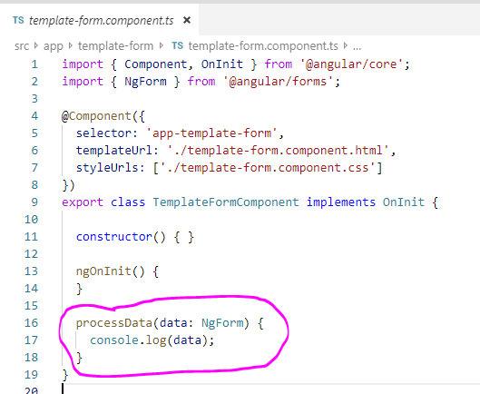

Selector prefix
Selector prefix is what will be written before the name of our component. Prefix are useful to track where the components is used when debugging for example
Below is a screenshot where we can see the default app prefix

Of course we can change it to something else if we want. In the tslint.json file we can edit it. On the screenshot is an example
If we change it in the .json file it will automatically change in all the components.
Something important if we want our new components to also use the same prefix we have to also edit it in the angular.json file
Tags: selector tslint.json angular.json prefix
Installing bootstrap
To install bootstrap in the terminal type "npm install --save bootstrap"
Only installing it will not do the whole work, we also have to tell Angular about its existance. We can do that by updating our angular.json file
Tags: angular.json bootstrap
Two-way data binding
The two-way data binding is when the view and the data source share information simultaneously. It is done by putting our variable in square and round brackets.

In the data source the shared variable is class property
In this where we are using input element if we type in it the result in p element is changed simultaneously
Tags: [(ngModel)]
Data binding from data source to view with double curly brackets
If in the class we have variable holding some content, we can use that content with double curly braces.
Below is a screenshot which shows the variable city with value Sofia
And below in the screenshot we can see how to use that variable in the html template. To do that we need to wrap the variable in curly braces.

Below we can see the result in the browser
Tags: {{xxx}}
Data binding from data source to view with square brackets
From the class/data source we can provide data to the html file by wrapping html property in square brackets
And this is how we wrap the html attribute. In the below example we give the value attribute data from our component class.
In the double quotes is the variable from the data source which we will assign to the desired property of the html tag.
And here is the result
Tags: [xxx]
Data binding from view to data source with round brackets
We can get data from the template view and use the data in the data source
With the '#' symbol and then our custom name we can get reference to the html element and then with that reference to use valid html property. The keyup in the example is valid html event. Note that we need to use round brackets when we want to get data from the view. And in the double quotes we are using method from the data source class and providing him the property value which contains the written value in the input.
Our handler function is method of the class which will get whatever we provide.
More on #reference, they can be used on any html element and we name them the way we want. The reference holds the html element with all its properties. We can use the reference anywhere in the component html/template but only in the template and not in the ts file for example.
Tags: (click) (xxx) #xxx reference
Element reference and ViewChild
There is many ways to obtain data from the view and on of them is with ViewChild on referenced element. First in the view we have to get reference to the element we want to use.

In the data source we will use the ViewChild decorator and will giv him the reference name. After the result will be ElementRef we can specify that. Then we will in this example just show the value but we need to use the nativeElement on the reference because the element we are accessing is in the DOM.
Note that if you are working with ViewChild you will maybe want to use it in the ngAfterViewInit lifecycle hook. Because the first time we will have access to the refferenced element will be after the view is created
Note that it is not recommended to set values from the nativeElement, use other types of binding if you want to do that. In general it is not good practice to directly set values on native elements
Tags: #xxx reference @ViewChild('xxx') ElementRef nativeElement ngAfterViewInit
Content between component tags
Usually everything between component tag is ignored by Angular, but sometimes we need to use that content. In the below example the paragraph between the child tags we will be ignored and we can show it in the child component with ng-content tag

We have to place ng-content tag in the child view to show everything between the child component tags
We can now see we have bothe paragraphs displayed
Tags: ng-content
Using if statement and ng class
If we have the following array of objects
With *ngIf and [ngClass] we can manage the behaviour of the elements. With *ngIf we can choose what to show or not. And [ngClass] we can set class property to html element based on some condition.
This is how our css looks like
And we will get the following result
Tags: *ngIf ngClass
Using if else statement
We can build if else in the following way, but lets first set some class properties to use for the example
So in this case if the variable is set to true we will see our movie title. But if its not the else will use the reference we have made to another text wrapped in ng-template
And after our variable is set to true we will see the movie title
Tags: *ngIf else ng-template
Using for loop in Angular
It is used by typing *ngFor. In this example we have an array of objects in the data source and for each of them we will provide them to the view.
Here we will use it with double curly brackets which are usually used for representing string values
And this is the result we will get

Tags: *ngFor
Providing data from parent to child component
We can provide data from the parent with square brackets and get the data in the child component with the @Input() decorator. In the parent component we have the following array of objects:
Now with for loop we will call the child component employee and provide it with each user. In the square brackets is how the variable will be called in the child component. Remember that if you use as a variable valid html attribute we will bind to it our data, because with square brackets we can bind and set values to valid html attributes.
Now in the child component data source we will use the @Input() decorator and give him the variable employer which is in the square brackets in the parent view.
And in the child view we will only display the name property from the provided object from the array
And this will be the result we will get in the browser
The Input decorator can also takes string parameter which is known as alias for renaming the property. For example if in the parent view in square brackets we put for example [examp] then in the alias we have to do it this way @Input('examp') myOwnName; In other words we provide examp property and in the alias we write examp but if we want in the child component to use it with different name we can set whatever we want after the decorator.
Tags: @Input() [xxx]
Event emmiter
Event emmiter are very similar to events like click and the rest. They are usefull to provide data from child component to parent component. To achieve that in our parent component first we need to create function which will receive data
Then in the parent view we need to create our custom emmiter which look like the original events. On it we will assign the function from the parent data source which will obtain the data. Note that it is important to use the dollar sign before the parameter name.
Now in the child data source we need to do the set up. First we have to use the @Output() decorator so we can provide data outside the component. The decorator will be for the name of our custom event. Then we need to make another class method which will be the function which will get the data from the child view and inside its body we will use our custom emmiter to output the data.
And now in the child view we can decide how to get data and what to get. In this case we will get data with click event and provide it to the child data source
The Input decorator can also takes string parameter which is known as alias for renaming the property. For example if in the parent view in round brackets we put for example (examp) then in the alias we have to do it this way @Output('examp') myOwnName; In other words we provide examp property and in the alias we write examp but if we want in the parent component to use it with different name we can set whatever we want after the decorator.
Tags: @Output() EventEmitter() [xxx] (xxx)
Lifycycle hooks
ngOnChanges -> it is called once property with decorator @Input() is changed
ngOnInit -> it is called on initialization of the component and called after the constructor
ngDoCheck -> it is used multiple times after any change during every change detection run. It is executed after any change on the view or data source
ngAfterContentInit -> called after ng-content has been projected into view
Tags: ngOnChanges ngOnInit ngDoCheck ngAfterContentInit
Creating our own directive
We can create our own directive with the CLI like this "ng g d your-name". By creating directive with the ng/cli our directive will be automatically added to the ngModule so angular can know about its existance
Our directive has selector which we will use on the elements which we want to apply this directive. Using Renderer2 here is important because if we are working only in browser and know what kind of DOM we will use then we dont really need Renderer2, but on other devices, where the DOM is different our directive will still work. setStyle is just an example here and all settings of the directive, of course we can use directives in many ways.
Note that in the constructor we can get directly refference to the element on which the directive is applied. This is because our directive is on that element.
This is how we use it in our view
And now in the broswer we can see that our paragraph is in green color
Tags: directive Renderer2
Listening for events with our custom behaviour
In the directives we can define listener for some kind of event and define what behaviour we want to achieve. We do this by using @HostListener
We can set our custom directive to an element like this
And the result on mouse over in this example will be to set orange background
Tags: directive Renderer2 @HostListener Event
Basics of routing
To have some routing we need to define them as array of objects of type Routes. Then to use that array for routing we need to give it to the RouterModule. forRoot means we will use this routing for our main module
In the our view we will have the following items. RouterLinkActive is to set some custom by us class for the current route, and active options attribute to match only '/' because that is usually contained in the other routes and respectively matched by them
To set some styling for our current route here is some example
And this is what we will see in the broswer
Tags: Routes RouterModule path forRoot routerLink routerLinkActive routerLinkActiveOptions router-outlet
Navigate with some predefined logic
If we want to change the route and move somewhere in the application based on some user action like click we can do it this way, in this example it will be by button click
So with button click from the Contacts component we want to switch to About component

Tags: Router navigate
Use variable router params
If we need to take the params directly from the url we can do the following way
In the Contacts componentwe will have anchor tag which will open the contact component with url /contact/123/maria
Now in the contact component we will get the params from the url. Something very important is that snapshot takes the url in the component creation and if we are changing the url from inside the component the snapshot will not track the changes and params will not change. To fix that in case we need we need to know that ActivatedRoute is observable and we can subscribe to it so anychanges coming from inside the component will update the params. Check the secondary screenshot to see how it works. Also in this case when working with routes Angular will unsubscribe automatically for us in this case
And we will display them in the contact component view
And this will be the result in the browser
Tags: path routerLink ActivatedRoute
Component driven form the basics
To work with forms first we need to import in our module file the FormsModule which is required to provide us with all the forms directives and functionality.
Now in our view in the form element we first have to get reference to it which is done with the # symbol and to assign to it the ngForm directive so our reference will know it is a form and will be able to manage the form. Then for every element like input etc. we need to put the ngModel attribute, so the element can become part of the ngForm. Also it is important to give every input a name attribute.
The pre tag is for debug purposes for us to easier check and preview the ngForm. We can see the result in a json object
And our result in the browser will look like this
Tags: FormsModule ngForm ngModel
Submit Component driven form
To submit the data we will use submit event and give the function our ngForm as parameter
The function in our data source will receive the ngForm and console.log it

In the browser console we can see the whole ngForm object and inspect whatever we would like to use. In most cases controls property is what we need, because it holds information about our html elements.
Tags: ngForm ngModel |json
Grouping elements in common wrapper
Often we will need to make connection between different inputs for example password and confirmPassword input where we want one of the inputs to know about the other. In this case we can use common wrapper for both of them. To do that we need to use ngModelGroup
In the browser now we can see the inputs with passwords are wrrapped in the as we named secrets object property which is object of the nested elements. This way we can use them combined

Tags: ngModelGroup
Creating and using custom Pipe
We can generate new pipe with the cli and after created it should be automatically registered in the module file
Out custom Pipe should look like this. The name property in the decorator function is how we will access this pipe in the html file. In the class the transform function will handle the logic of the pipe.
Something important, note the pure property in the decorator. By default pipes are pure: true. That property is for optimizations if once the data for the pipe was checked not to be checked again if the property is true and if the data is of referrence type. The data will be checked again only if the reference was changed. For that reason we have button onclick which will concat where cancat will change the reference of the object posts. For example push to array will not change the reference of the array and with pure:true the pipe will not update the data

Below is just how the data looks like and the example of what would happen if we use concat or push
In the html file we will use the pipe on the posts provided to the pipe and we will transform the posts object to counter with the help of the pipe. Basically we tell what to transform, in this case the posts and how which is the pipe. The double dots is how we provide parameters to the pipe in case we want to provide some parameters like in this case
And we will get the following result in the browser
We can also use multiple pipes by chaining them, where they will be applied one after another
Tags: Pipe PipeTransform pure transform |xxx
View encapsulation
Every component has encapsulation view to make components styling unique by adding additional attributes, in order to make styling for example for paragraph from one component to not get mixed with paragraph stylings from another component. The default value for ViewEncapsulation is Emulated. We can change it this way:
Tags: encapsulation ViewEncapsulation
Ngx Toastr
First run the command "npm install ngx-toastr --save" in the terminal to install toastr. If done correctly you should have it in the dependencies in the package.json file.
Next thing is to register it in the angular.json file in the styles
Now we need to inform Angular about the modules. Note that Toastr depends on BrowserAnimationsModule which comes from angular.
And here is how we use the toastr
Tags: toastr interceptor
Interceptor example
Interceptors are good to make something with the request or response.For example using toastr or attaching some additional headers. In this example we will add additional header extending our request with existing user
Here is how we let angular know about the interceptor.
Tags: interceptor HttpInterceptor HttpRequest HttpHandler HttpEvent setHeaders